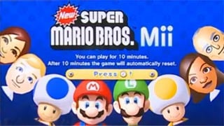

Imagem ilustrativa do jogo Super Mario Bros
É um jogo extremamente divertido, com gráficos bonitos, jogabilidade muito daora de se acompanhar, personagens cativantes, história simples mas muito boa e efetiva, é um jogo que faz parte da minha infância e seria um desrespeito eu não colocar ele aqui, esse jogo é simplesmente cinema demais!
Link para o site oficial da Nintendo: Site da Nintendo
Neste link, você encontrará a história com mais detalhes sobre o game de Super Mario Bros: História do Super Mario Bros
Voltar para o Início: Lobby
Voltar para a lista de games favoritos: Lista de Jogos Favoritos